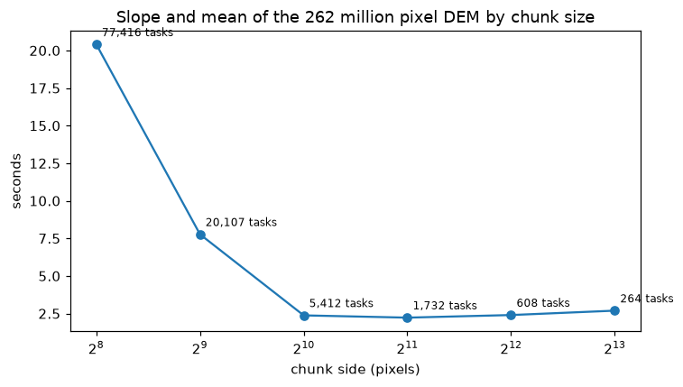

From a Laptop to a Cluster: Sessions, Workers and the Dashboard
Notebook 00 ran everything on Dask’s threaded scheduler, which uses every core of one machine inside one Python process. That is the right default for NumPy and GDAL work, but not always enough: pure Python code is held back by the global interpreter lock, one process cannot use a second machine, and a GPU wants a worker of its own. A Dask cluster solves all three: a scheduler hands tasks to worker processes on this machine, on GPUs or on the nodes of an HPC system or a Kubernetes cluster. This notebook starts and stops clusters with pdist.start, compares threads and processes on two kinds of work, shows the dashboard and the job scripts that HPC clusters run, and measures the two decisions that matter most for raster work: chunk size, and when to keep data in worker memory with persist.
Overview
The parts of a Dask cluster
Part
Role
Client
your Python session; builds task graphs and submits them
Scheduler
one process that tracks every task and decides which worker runs it, preferring the worker that already holds its inputs
Workers
processes that run tasks with a pool of threads, hold results in memory and send them to each other when needed
Nanny
a small process per worker that restarts it if it dies or exceeds its memory limit
With no cluster, Dask’s threaded scheduler runs the graph with a thread pool inside your own process: no scheduler, no copies, no network, but also no isolation and only one machine.
Threads or processes
Python’s global interpreter lock (GIL) lets only one thread run Python bytecode at a time. Compiled libraries (NumPy, SciPy, GDAL, Shapely 2, CuPy) release it during their inner loops, so threads run them in parallel. Code that loops in Python (a for loop over features, a function applied row by row) does not, and only separate processes run it in parallel. Processes pay for that: data crossing between them are serialized and copied.
Work
Best choice
NumPy, SciPy, GDAL and rasterio, Shapely 2 vectorized operations
threads (or few processes with many threads)
pure Python loops, GeoPandas apply, many small objects
processes with one or two threads each
GPU work
one worker process per GPU (dask-cuda)
more memory or cores than one machine has
a cluster on several machines (HPC or cloud)
Memory limits and spilling
Each worker has a memory limit. Above 60 % of it the worker writes (spills) results to disk, above 80 % it pauses, and at 95 % the nanny restarts it. Spilling keeps large jobs alive but slow; a job that spills constantly needs smaller chunks, more workers or persist used more carefully.
Chunk size
Every chunk is at least one task, and every task costs the scheduler roughly a millisecond of overhead plus a little memory. Tiny chunks drown the work in overhead; huge chunks leave cores idle and risk running out of memory. Dask’s guidance is chunks of about 100 MB; for moving windows the chunk must also be much wider than the halo.
Sessions with GeoLattice
pdist.start(kind, ...) starts or connects to a cluster, makes it the active session (every lazy operation in geolattice.distributed then runs on it) and returns a Session:
kind
What starts
Extra arguments
"local"
worker processes on this machine
n_workers, threads_per_worker, memory_limit
"cuda"
one worker per GPU with dask-cuda
rmm_pool_size, device_memory_limit, …
"auto"
"cuda" if a GPU and dask-cuda exist, else "local"
"slurm", "pbs"
batch jobs that run workers, with dask-jobqueue
cores, memory, walltime, queue, account
"kubernetes"
worker pods with the dask-kubernetes operator
image, resources, …
"address"
connect to a scheduler that is already running
address="tcp://host:8786"
Session member
Use
status()
workers, threads, total memory, dashboard link
dashboard_link
the live dashboard (task stream, memory, progress)
scale(n), adapt(minimum, maximum)
fixed or load-driven number of workers
client, cluster
the underlying Dask objects
close() or with pdist.start(...) as s:
shut down
pdist.status() and pdist.dashboard_link() describe the active session, and pdist.plan_chunks, pdist.persist and pdist.compute help with chunking and memory.
Learning objectives
Describe the client, scheduler, workers and nanny, and when Dask runs without them.
Choose threads or processes for a workload, and measure the difference.
Start, scale and close local and GPU clusters, and connect to a running scheduler.
Read the job script a SLURM or PBS cluster submits, and know what changes on Kubernetes.
Choose a raster chunk size from measurements and from pdist.plan_chunks.
Use persist for data that several computations reuse, and avoid pulling large results to the client.
Write a cluster script with the if __name__ == "__main__": guard.
Data
Dataset
Content
Great Plains elevation
90 m DEM, 17,196 x 15,245 pixels, from Data/03_spatial_analysis/Great_plain/Raster/elev.tif
Kansas building footprints
1.6 million polygons cached by dd.kansas_buildings() (notebook 00)
Contents
Setup
The default: threads in this process
A local cluster
Threads or processes
Scaling a cluster
One worker per GPU
HPC and cloud clusters
Connecting to a running scheduler
Choosing a chunk size
Persist, compute and pulling results
A cluster script
Summary and exercises
Setup
Code
import warnings # warning controlwarnings.filterwarnings("ignore") # hide routine library warningsimport os # environment and CPU countimport time # wall-clock timingfrom pathlib import Path # file pathsimport matplotlib.pyplot as plt # figuresimport numpy as np # arraysimport pandas as pd # tablesimport geopandas as gpd # vector dataimport xarray as xr # labelled rastersimport geolattice # GeoLatticeimport geolattice.distributed as pdist # distributed and GPU spatial computingimport dist_data as dd # chapter helper: paths, cached downloads, timersplt.rcParams.update({"figure.dpi": 110}) # figure resolutionpd.set_option("display.width", 140) # wider printed tablesOUT = Path("outputs") # results and scratch files written by this chapterOUT.mkdir(exist_ok=True) # create it if neededcaps = pdist.capabilities() # engines and GPUs on this machineprint("GeoLattice", geolattice.__version__, "|", os.cpu_count(), "CPU cores |", caps["gpus"], "GPU(s)", # versionsf"({caps.get('gpu_memory_total', 0) /1e9:.0f} GB)"if caps["gpus"] else"") # GPU memoryimport re # text substitution for printed job scriptsimport subprocess # run the example scriptimport sys # the current Python interpreterimport dask # Dask configuration
Without a session, pdist.status() reports Dask’s threaded scheduler: one “worker” (this process) with one thread per core.
This machine has a GPU, so compute="auto" would put the slope chunks on it. The comparisons of threads, processes and chunk sizes below pass compute="cpu" so that they measure the CPU; the GPU worker gets its own section.
Code
print(pdist.status()) # no session yetdem = dd.gp_raster("elev") # lazy DEM, 2048 x 2048 chunkswith dd.timer("mean slope, threaded scheduler"): # time itprint(f"mean slope {float(pdist.raster.slope(dem, compute='cpu').mean()):.3f} degrees") # read, slope, reduce
{'kind': 'threads', 'workers': 1, 'threads': 24, 'dashboard': None}
mean slope 4.484 degrees
mean slope, threaded scheduler: 2.30 s
A local cluster
pdist.start("local") starts a scheduler and worker processes on this machine. Here 4 workers with 6 threads each use the 24 cores, each limited to 24 GB of memory.
Code
s = pdist.start("local", n_workers=4, threads_per_worker=6, memory_limit="24GB") # start the clusterprint(s) # session and dashboardst = s.status() # workers, threads, memoryprint({k: (dd.gb(v) if k =="memory_limit"else v) for k, v in st.items()}) # readableprint("active session:", pdist.get_session() is s) # every lazy operation now runs here
with dd.timer("mean slope, local cluster (4 processes x 6 threads)"): # same computation on the clusterprint(f"mean slope {float(pdist.raster.slope(dem, compute='cpu').mean()):.3f} degrees") # identical result
mean slope 4.484 degrees
mean slope, local cluster (4 processes x 6 threads): 3.90 s
The result is identical, but the cluster was slower than plain threads. This workload is NumPy, which already ran in parallel on threads inside one process; on the cluster, the halo strips that neighbouring chunks exchange travel between processes, and every task goes through the scheduler. For NumPy and GDAL work on one machine the threaded scheduler is usually the fastest choice; the cluster pays off with code that holds the GIL (next section), with several machines, and when isolation and the dashboard matter. The dashboard link above opens a live view of the task stream, worker memory and progress bars; on a remote machine forward port 8787 with ssh -L 8787:localhost:8787 host.
Threads or processes
The difference appears with pure Python code. The function below computes building areas with a Python loop over the vertices (the shoelace formula), as hand-written per-feature code often does. It runs on 24 partitions of 400,000 buildings three ways: the threaded scheduler, the local cluster’s processes, and, for comparison, the vectorized pdist.vector.area (Shapely releases the GIL).
Code
def shoelace_area(part): # pure Python: one loop per building, one per vertex out = [] # areasfor g in part.geometry: # each polygon xy =list(g.exterior.coords) # its vertices as Python tuples a =0.0# running sumfor (x0, y0), (x1, y1) inzip(xy[:-1], xy[1:]): # each edge a += x0 * y1 - x1 * y0 # shoelace term out.append(abs(a) /2) # polygon areareturn pd.Series(out, index=part.index) # aligned to the inputbld = dd.kansas_buildings().iloc[:400_000].to_crs(5070) # 400,000 buildings in metresparts = pdist.spatial_partition(bld, 24, method="none") # 24 slices of rowstasks = [dask.delayed(shoelace_area)(p) for p in parts] # one task per sliceres = {} # seconds per waywith dask.config.set(scheduler="threads"): # ignore the cluster: threads in this processwith dd.timer("pure Python, 24 threads (GIL)", res): # time it a_thr = pd.concat(dask.compute(*tasks)) # runwith dd.timer("pure Python, 4 processes x 6 threads", res): # the cluster a_proc = pd.concat(dask.compute(*tasks)) # run on workers
pure Python, 24 threads (GIL): 3.81 s
pure Python, 4 processes x 6 threads: 2.32 s
Code
s.close() # close the 4 x 6 clusters = pdist.start("local", n_workers=24, threads_per_worker=1, memory_limit="4GB") # one thread per processs.client.wait_for_workers(24) # wait until all have startedwith dd.timer("pure Python, 24 processes x 1 thread", res): # one Python interpreter per core a_p24 = pd.concat(dask.compute(*tasks)) # runwith dask.config.set(scheduler="threads"): # back to threads for the vectorized versionwith dd.timer("Shapely vectorized, 24 threads", res): # compiled code releases the GIL a_vec = pdist.vector.area(bld) # GEOS areaprint("largest difference between methods:", float((a_p24 - a_vec).abs().max()), "m2") # same answerpd.Series(res, name="seconds").round(2).to_frame() # table
pure Python, 24 processes x 1 thread: 2.02 s
Shapely vectorized, 24 threads: 0.08 s
largest difference between methods: 0.0003866876122629037 m2
seconds
pure Python, 24 threads (GIL)
3.81
pure Python, 4 processes x 6 threads
2.32
pure Python, 24 processes x 1 thread
2.02
Shapely vectorized, 24 threads
0.08
On threads the Python loop gains little from 24 cores, because the GIL lets one thread run Python at a time. Four processes with six threads each were nearly twice as fast, and 24 single-threaded processes a little faster again, because each process has its own interpreter and its own GIL. The gain is far below 24-fold: every partition of polygons has to be pickled, sent to a worker process and unpickled there, and the areas sent back. The real lesson is in the last row: the vectorized Shapely call, which runs in C and releases the GIL, was about twenty-five times faster than the best of them. Vectorize first; reach for processes only for code that cannot be vectorized.
Scaling a cluster
scale(n) sets a fixed number of workers; adapt(minimum, maximum) adds workers while tasks are waiting and retires idle ones, which on a shared HPC system releases nodes as soon as they are not needed.
Code
s.scale(8); s.client.wait_for_workers(8); time.sleep(2) # shrink to 8 workersprint("after scale(8):", s.status()["workers"], "workers") # checks.adapt(minimum=2, maximum=12) # let load decide between 2 and 12print("adaptive between 2 and 12 workers; now", s.status()["workers"]) # adaptive modes.close() # shut downprint("after close:", pdist.status()["kind"]) # back to threads
after scale(8): 8 workers
adaptive between 2 and 12 workers; now 8
after close: threads
One worker per GPU
pdist.start("cuda") uses dask-cuda’s LocalCUDACluster: one worker process per visible GPU, each pinned to its device. Arguments such as rmm_pool_size="8GB" give each worker an RMM memory pool, and device_memory_limit makes the worker spill GPU data to host memory before the device fills up. Inside the session, compute="gpu" operations run on the GPU worker.
Code
if caps["gpus"]: # needs a GPU and dask-cudawith pdist.start("cuda") as g: # one worker per GPU, closed at the end of the blockprint(g, g.status()["workers"], "worker(s), GPU session:", g.is_gpu) # one worker herewith dd.timer("mean slope on the GPU worker (read on the worker, slope on its GPU)"): # time it v =float(pdist.raster.slope(dem, compute="gpu").mean()) # chunks become CuPy on the workerprint(f"mean slope {v:.3f} degrees") # same answerelse: # without a GPUprint("no GPU: pdist.start('auto') would start a CPU cluster instead") # fallback
<Session kind='cuda' dashboard='http://127.0.0.1:8787/status'> 1 worker(s), GPU session: True
mean slope on the GPU worker (read on the worker, slope on its GPU): 5.61 s
mean slope 4.484 degrees
With one GPU the GPU worker has one thread, so it reads and decodes the GeoTIFF chunks one after another; the CPU sessions read them on 24 threads. That is why the whole chain (read, copy to the GPU, slope, reduce) was several times slower here than on the CPU, even though slope itself is much faster on the GPU (notebook 00). For a GPU pipeline the reading has to keep up: data already in GPU memory, a faster format (notebook 02) or several CPU threads feeding the device. On a machine with several GPUs pdist.start("cuda") starts one worker per device and the chunks are shared between them; here, with one, the same code runs on one.
HPC and cloud clusters
On an HPC system the workers run inside batch jobs. pdist.start("slurm", ...) creates a dask_jobqueue.SLURMCluster: the scheduler runs where you are (a login node or a small job), and each worker is an sbatch job. Starting the session without n_workers submits nothing, so the job script it would submit can be read on any machine. The scheduler address is replaced by <scheduler> in the printout.
Code
hpc = pdist.start("slurm", cores=24, processes=4, memory="96GB", walltime="02:00:00", # one job = 4 workers x 6 threads queue="normal", account="my_project", # partition and allocation job_extra_directives=["--constraint=intel"]) # any extra #SBATCH lineprint(re.sub(r"tcp://\S+", "tcp://<scheduler>", hpc.cluster.job_script())) # the script sbatch would receiveprint("workers now:", hpc.status()["workers"], "(nothing submitted)") # no job until scale()hpc.close() # stop the local scheduler
On a real cluster, hpc.scale(jobs=10) (or pdist.start("slurm", n_workers=10, ...)) would submit ten such jobs and hpc.adapt(maximum_jobs=50) would let the load decide. kind="pbs" writes the same with #PBS directives. Two practical rules: keep cores and memory equal to what one job really gets, and use processes= to split a job into several workers when the work holds the GIL.
On Kubernetes, pdist.start("kubernetes", image="ghcr.io/dask/dask:latest", n_workers=10, resources={"requests": {"memory": "8Gi"}}) asks the dask-kubernetes operator for a scheduler pod and ten worker pods. The image must contain the same Python packages (GeoLattice included) as the client. This cannot run on the build machine, which has no Kubernetes cluster, so the call is shown, not executed.
Connecting to a running scheduler
A scheduler can also be started outside Python (dask scheduler and dask worker on the command line, a Helm chart, a cloud service). pdist.start("address", address=...) connects to it. Here a small cluster stands in for such a service.
Code
from dask.distributed import LocalCluster # stand-in for a cluster started elsewhereservice = LocalCluster(n_workers=2, threads_per_worker=2, dashboard_address=None) # "someone else's" clusters = pdist.start("address", address=service.scheduler_address) # connect by addressprint(s.kind, s.status()["workers"], "workers,", s.status()["threads"], "threads") # what we joinedtry: # a session by address does not own the cluster s.scale(4) # not allowedexceptRuntimeErroras e: # expectedprint("scale():", e) # messages.close(); service.close() # disconnect, then stop the stand-in
address 2 workers, 4 threads
scale(): Cannot scale a cluster this session did not create
Choosing a chunk size
pdist.plan_chunks(shape, dtype) proposes square chunks of about 128 MB for the CPU, or about 5 % of free GPU memory for the GPU, and keeps them at least eight halo widths wide. The cell below measures slope with the DEM read in chunks from 256 to 8192 pixels on a side.
Code
print("CPU plan:", pdist.plan_chunks(dem.shape, "float32"), # suggested chunks"| GPU plan:", pdist.plan_chunks(dem.shape, "float32", compute="gpu"), # GPU suggestion"| 3 layers:", pdist.plan_chunks((3,) + dem.shape, "float32", n_layers=3)) # stacks get smaller chunksrows = [] # one row per chunk sizefor c in [256, 512, 1024, 2048, 4096, 8192]: # chunk sides d_c = dd.gp_raster("elev", chunks={"y": c, "x": c}) # reopen with this chunking sl = pdist.raster.slope(d_c, compute="cpu") # lazy slope t = time.perf_counter();float(sl.mean()); sec = time.perf_counter() - t # read, slope, reduce rows.append({"chunk": c, "chunk MB": c * c *4/1e6, "chunks": d_c.data.npartitions, # sizes"tasks": len(sl.mean().data.__dask_graph__()), "seconds": sec}) # graph size and timechunks = pd.DataFrame(rows).set_index("chunk") # tablechunks.round(2) # show
fig, ax = plt.subplots(figsize=(7, 4)) # one panelax.plot(chunks.index, chunks.seconds, "o-") # time against chunk sidefor c, r in chunks.iterrows(): # label each point ax.annotate(f"{r.tasks:,.0f} tasks", (c, r.seconds), textcoords="offset points", xytext=(4, 6), fontsize=8) # task countax.set_xscale("log", base=2); ax.set_xlabel("chunk side (pixels)"); ax.set_ylabel("seconds") # axesax.set_title("Slope and mean of the 262 million pixel DEM by chunk size"); plt.tight_layout(); plt.show() # draw

The 256 pixel chunks (0.26 MB each) created 77,000 tasks and took about nine times longer than the best setting. In this run 2048 pixel chunks (17 MB) were fastest, with 4096 (67 MB) close behind, and 8192 pixel chunks slowed down again because six chunks cannot keep 24 threads busy. The best size is somewhat below the 100 MB rule of thumb here because slope does little work per pixel and smaller chunks stay in the CPU caches; for heavier work per pixel the optimum moves up. Measuring a few sizes, as here, takes a minute and is worth it for any job that will run for hours.
Persist, compute and pulling results
.compute() (or pdist.compute) runs the graph and returns the result to the client.
pdist.persist(x) runs the graph and keeps the result in worker memory, returning a lazy handle to it. Later computations start from there instead of re-reading the files.
.values and np.asarray on a lazy array compute it and copy everything to the client: fine for a summary, costly for a gigabyte.
Code
s = pdist.start("local", n_workers=4, threads_per_worker=6, memory_limit="24GB") # a fresh clustert = {} # seconds per stepwith dd.timer("slope and aspect from the files (two reads)", t): # without persistfloat(pdist.raster.slope(dem, compute="cpu").mean());float(pdist.raster.aspect(dem, compute="cpu").mean()) # each reads the DEMwith dd.timer("persist the DEM in worker memory", t): # keep it on the workers dem_p = pdist.persist(dem);from dask.distributed import wait; wait(dem_p.data) # wait until loadedwith dd.timer("slope and aspect from the persisted DEM", t): # reusefloat(pdist.raster.slope(dem_p, compute="cpu").mean());float(pdist.raster.aspect(dem_p, compute="cpu").mean()) # no file readswith dd.timer("pull the full slope raster to the client (.values)", t): # a gigabyte over the network arr = pdist.raster.slope(dem_p, compute="cpu").values # computed and copiedprint(f"pulled {dd.gb(arr.nbytes)}; client process now uses {dd.rss_gb():.1f} GB") # what it costprint(pdist.memory_report()["workers"]) # memory on each worker
slope and aspect from the files (two reads): 7.17 s
persist the DEM in worker memory: 0.62 s
slope and aspect from the persisted DEM: 4.74 s
pull the full slope raster to the client (.values): 2.70 s
pulled 1.05 GB; client process now uses 10.0 GB
{'tcp://127.0.0.1:38505': {'memory_gb': 1.751, 'limit_gb': 24.0}, 'tcp://127.0.0.1:40075': {'memory_gb': 1.503, 'limit_gb': 24.0}, 'tcp://127.0.0.1:42751': {'memory_gb': 1.339, 'limit_gb': 24.0}, 'tcp://127.0.0.1:44949': {'memory_gb': 1.262, 'limit_gb': 24.0}}
Persisting paid off as soon as the DEM was reused: the second pair of operations skipped the GeoTIFF reads and decoding and ran about a third faster. Pulling the whole slope raster to the client took 2.7 s, more than half the time of computing slope and aspect on the persisted DEM, and all of it went into serializing every chunk and sending it from the worker processes to this one. Keep large results on the workers and bring back summaries, or write them to disk from the workers with pdist.write_raster (notebook 02).
Code
del dem_p, arr # release worker and client memorys.close() # shut down
A cluster script
Worker processes start by importing the main module. In a script, code at the top level would run again in every worker, so cluster code must sit under if __name__ == "__main__":. (Notebooks do not need the guard: their main module is the kernel.) The cell below writes such a script to scripts/slope_on_cluster.py and runs it.
Code
script = Path("scripts/slope_on_cluster.py") # where the script goesscript.parent.mkdir(exist_ok=True) # create the folderscript.write_text("""\\"\"\"Slope of the Great Plains DEM on a local Dask cluster, written to Zarr.\"\"\"import timefrom pathlib import Pathimport geolattice.distributed as pdistROOT = Path(__file__).resolve().parents[4]DEM = ROOT / "Data" / "03_spatial_analysis" / "Great_plain" / "Raster" / "elev.tif"OUT = Path(__file__).resolve().parents[1] / "outputs" / "gp_slope.zarr"def main(): with pdist.start("local", n_workers=4, threads_per_worker=6) as session: print("workers:", session.status()["workers"]) t = time.perf_counter() dem = pdist.read_raster(DEM, chunks={"y": 2048, "x": 2048}) slope = pdist.raster.slope(dem, compute="cpu") pdist.write_raster(slope, OUT) # each worker writes its own chunks print(f"wrote {OUT.name} in {time.perf_counter() - t:.1f} s")if __name__ == "__main__": # worker processes import this file; only the parent runs main() main()""") # script textr = subprocess.run([sys.executable, str(script)], capture_output=True, text=True) # run itprint(r.stdout or r.stderr[-1500:]) # its outputz = pdist.read_zarr(OUT /"gp_slope.zarr") # open the result lazilyprint(z, "\nchunks:", z.slope.data.chunksize) # same grid, written chunk by chunk
workers: 4
wrote gp_slope.zarr in 3.9 s
<xarray.Dataset> Size: 1GB
Dimensions: (y: 17196, x: 15245)
Coordinates:
* y (y) float64 138kB 2.539e+06 2.539e+06 ... 9.92e+05 9.919e+05
* x (x) float64 122kB -1.25e+06 -1.25e+06 ... 1.216e+05 1.217e+05
Data variables:
slope (y, x) float32 1GB dask.array<chunksize=(2048, 2048), meta=np.ndarray>
spatial_ref int64 8B ...
chunks: (2048, 2048)
Code
import shutil # file removalshutil.rmtree(OUT /"gp_slope.zarr") # remove the 1 GB result again
Summary and exercises
A Dask cluster has a client, a scheduler, workers and nannies; without one, Dask’s threaded scheduler runs everything in this process on all cores.
NumPy, GDAL and vectorized Shapely run in parallel on threads; pure Python loops need processes. Here 24 single-threaded processes ran a Python loop twice as fast as 24 threads, and a vectorized Shapely call was about twenty-five times faster again.
For NumPy work on one machine the threaded scheduler beat the local cluster, which pays for moving halo strips between processes.
pdist.start starts local, GPU, SLURM, PBS and Kubernetes clusters or joins a running one; the Session scales, adapts, reports status and closes, also as a context manager.
Chunk size matters: tiny chunks drown in task overhead and huge ones leave cores idle; measure a few sizes for long jobs.
persist keeps reused data in worker memory; .values copies everything to the client.
Cluster scripts need the if __name__ == "__main__": guard.
Exercises
Repeat the threads and processes comparison with pdist.vector.buffer(bld, 10). Which setup wins, and why?
Start a cluster with memory_limit="1GB" per worker and persist the DEM. Watch what the workers do (the dashboard, or pdist.memory_report()), and explain.
Write the PBS version of the SLURM job script with pdist.start("pbs", ...) and compare the two.
Add a --workers argument to scripts/slope_on_cluster.py and plot the run time for 1, 2, 4 and 8 workers.